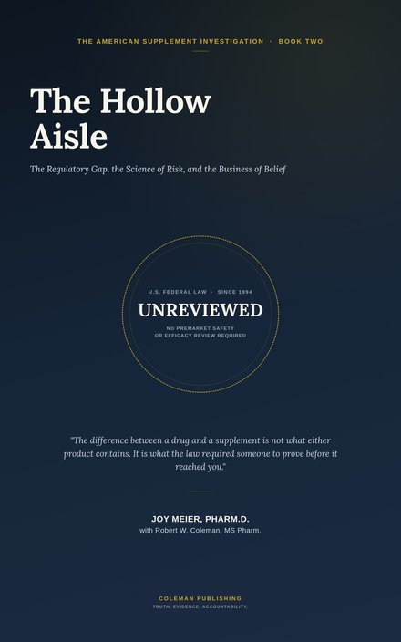

What the law never required anyone to prove
A dietary supplement can reach a U.S. shelf without its manufacturer ever proving, to anyone, that it works. This volume follows that regulatory gap through the label, the marketplace, documented liver injury and drug interactions, the dollar behind the industry, and the vocabulary built to sell science it doesn't have — closing with a practical worksheet to bring to your next medical appointment.

Two products sit on two shelves in the same drugstore. One is a prescription statin. The other is a bottle of red yeast rice a few aisles over — containing, depending on the batch, a compound chemically identical to the statin's active ingredient. One underwent years of clinical trials and regulatory review before a patient swallowed it. The other, in most cases, did not.
That fork in the road — not a difference in what the products contain, but a difference in what the law required someone to prove — is where this book begins.
Under the Dietary Supplement Health and Education Act of 1994, a manufacturer can formulate a new supplement and start selling it with no evidence of safety or effectiveness submitted to anyone beforehand. The law presumes a supplement is safe until the FDA proves otherwise — the opposite of the standard a new drug has to clear. This book walks through what that means for the label in your hand: serving-size games, the "proprietary blend" loophole, and the disclaimer nobody reads.
"Natural" describes where a compound came from, not what it does once it's inside you — foxglove is entirely natural, and it's also the source of a compound powerful enough to stop a heart at the wrong dose. This book documents real, registry-based harm: a national research network tracking drug-induced liver injury found the share attributed to herbal and dietary supplements rose from 7 to 20 percent of documented cases in less than a decade, with one investigation finding 40 percent of implicated green tea extract products didn't even list the compound on their label.
"Nature produces both medicines and poisons. 'Natural' is not a safety test."The Hollow Aisle
Subscription "auto-ship" models, affiliate commissions paid regardless of whether a product helps anyone, and multi-level marketing structures where a 2024 federal report found most participants earned $1,000 a year or less — and in at least seventeen companies reviewed, most earned nothing at all. This book follows the dollar through every one of these models, and decodes the vocabulary — "pharmaceutical grade," "clinically studied," "third-party tested" — built to make marketing sound like research.
What DSHEA actually requires — and what it doesn't — from premarket review to a recall that's usually voluntary rather than compelled.
Real registry data on liver injury and drug interactions, including a documented heart transplant rejection case tied to a common herbal supplement.
The industry's economics, its marketing vocabulary, and an honest look at why clinical training hasn't kept pace with the products patients actually take.
A printable medication and supplement reconciliation worksheet, built to close the exact gap this book documents — bring it to your next appointment, prescribed and unprescribed products both, in one place.
Get the worksheet (PDF) →